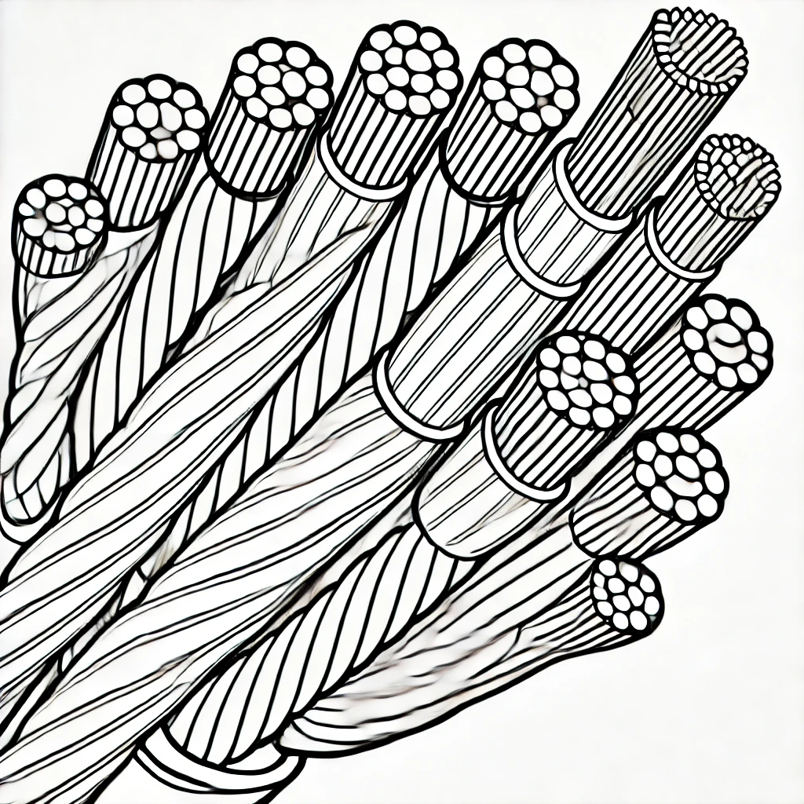
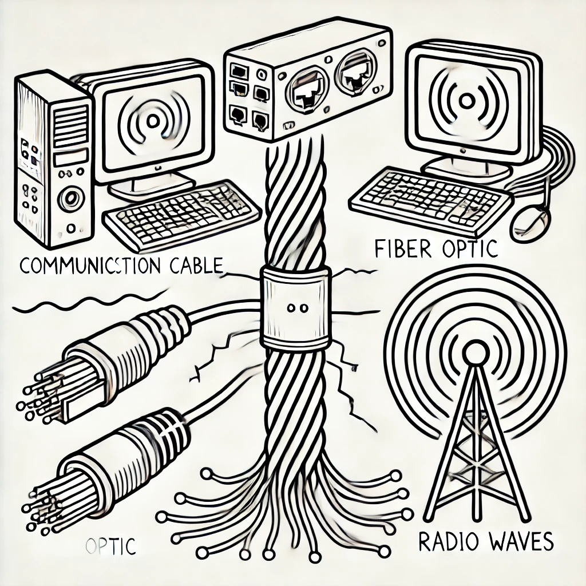
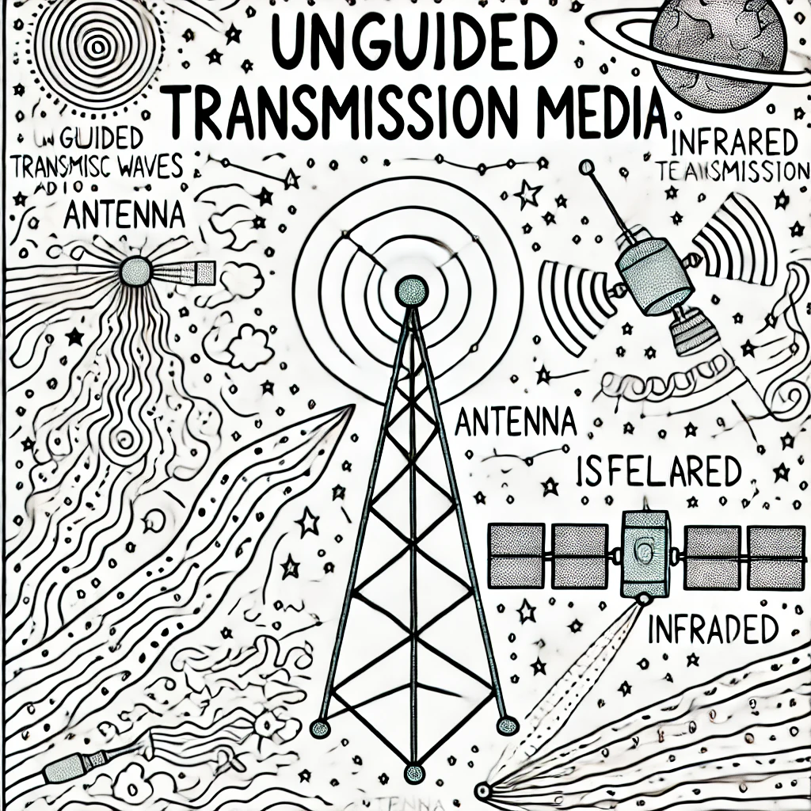

I mezzi trasmissivi
I mezzi Guidati
I mezzi guidati sono linee fisiche che supportano la trasmissione di segnali elettrici o ottici, come cavi in rame twisted-pair e fibre ottiche.
Il Cavo in Rame
Il cavo in rame è costituito da coppie di conduttori in rame isolati. Utilizzato nelle reti pubbliche e locali.

La Fibra Ottica
Il cavo in fibra ottica è formato da filamenti di materiali vetrosi o polimerici dove passa un segnale di luce. È il mezzo trasmissivo più veloce e affidabile.

Mezzi Non Guidati
I mezzi non guidati sono percorsi da segnali elettromagnetici trasmessi attraverso lo spazio, come quelli di antenne, satelliti e dispositivi a infrarossi.
